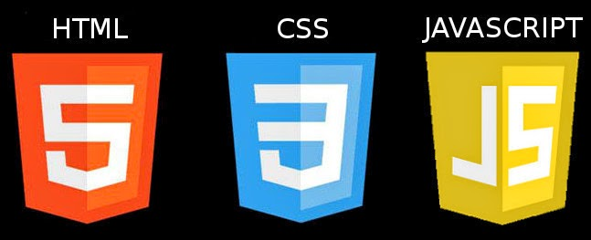

-
Docker
11 commentsEs una tecnología de creación de contenedores, que permite la creación y el uso de contenedores de Linux. Caracteristicas *Autogestión de los contenedores. *Fiabilidad *Aplicaciones libres de las dependencias instaladas en el sistema anfitrión. *Capacidad para desplegar multitud de contenedores en un mismo equipo físico. *Puesta en marcha de los servicios en un abrir y cerrar de ojos. *Contenedores muy livianos que facilitan su almacenaje, transporte y despliegue. La instalacion primero debemos configurar el repositorio Actualizar el aptíndice del paquete: $ sudo apt-get update Instale paquetes para permitir aptusar un repositorio sobre HTTPS: $ sudo apt-get install \ apt-transport-https \ ca-certificates \ curl \ software-properties-common Agregue la llave GPG oficial de Docker: $ curl -fsSL https://download.docker.com/linux/ubuntu/gpg | sudo apt-key add - Verifique que ahora tenga la clave con la huella digital 9DC8 5822 9FC7 DD38 854A E2D8 8D81 803C 0EBF CD88, buscando los últimos 8 caracteres de la huella digital. $ sudo apt-key fingerprint 0EBFCD88 INSTALAR DOCKER CE Actualizar el aptíndice del paquete. $ sudo apt-get update Instale la última versión de Docker CE, o vaya al siguiente paso para instalar una versión específica: $ sudo apt-get install docker-ce Para instalar una versión específica de Docker CE, enumere las versiones disponibles en el repositorio, luego seleccione e instale: a. Listar las versiones disponibles en tu repositorio: $ apt-cache madison docker-ce docker-ce | 18.03.0~ce-0~ubuntu | https://download.docker.com/linux/ubuntu xenial/stable amd64 Packages Verifique que Docker CE esté instalado correctamente ejecutando la hello-world imagen. $ sudo docker run hello-worldRead More -
Evaluacion
9 comments Primero se realizo una una evaluacion sobre los temas de html, css, js
En la cual te da una serie de preguntas básicas y dependiendo de tu nivel te arroja un resultado. En mi caso me salio mas alto el js. Aqui te dejo los link y cuentame que tema tuviste la mayor puntuación. Estare respondiendo sus comentarios.
Los siguientes link: HTML.- https://www.w3schools.com/html/html_quiz.asp
CSS.- https://www.w3schools.com/css/css_quiz.asp
JS.- https://www.w3schools.com/js/js_quiz.asp
Read More -
Wordpress
9 comments
Wordpress se ha convertido en uno de los sistemas de gestión de contenidos (CMS) más populares y usados en la red, esto es debido a que puede ser adaptado a diversos tipos de uso, además cuenta con una gran cantidad de plug-ins que le permiten potenciar aún más su uso descargamos WordPress: wget http://wordpress.org/latest.tar.gz – descomprimimos la descarga. tar xzvf latest.tar.gz – Y copiamos/movemos la carpeta descomprimida adonde deseamos, luego Configuramos el docker con mysql: 1) docker run --name mysql -e MYSQL_ROOT_PASSWORD=123456 -d mysql 2) docker run --name wordpress --link mysql:mysql -p 8080:80 -d wordpress
Read More -
Instalación del servidor
9 commentsPara tener que nuestra pagina en internet debemos contrartar un servidor para esto hay varios que dan este servicio
En la cual esta DigitalOcean que es un proveedor estadounidense de servidores virtuales privados. Este tiene otorga facilidad de pago ya que cuenta con diferentes precios, da facilidad al usuario para elegir cual usar. En este caso yo escogi el primero que cuesta $5 dolares, es para un pc y tiene un 1Gb. Pero tambien hay otros ese es el mas barato puede llegar hasta $960 dolares mensuales para gan capacidad. Experiencia: Primero no sabia cuales eran y como se manejaban estos servicios ya que es algo nuevo y ahora estoy aprendiendo a utilizarlo.
Read More